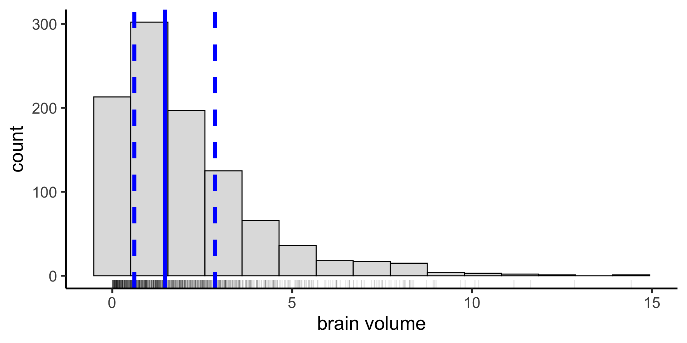
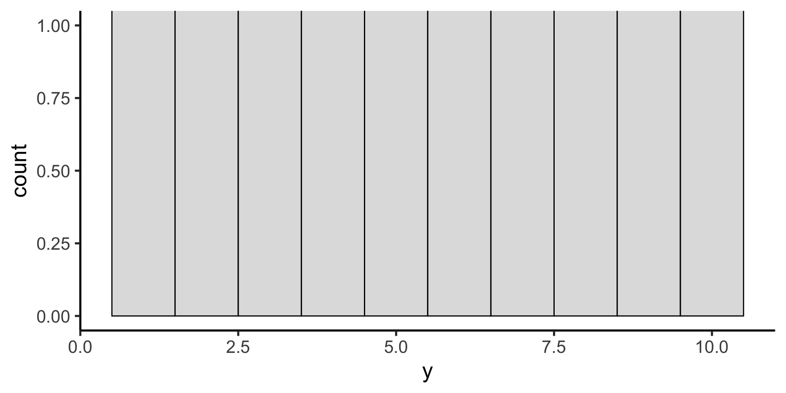
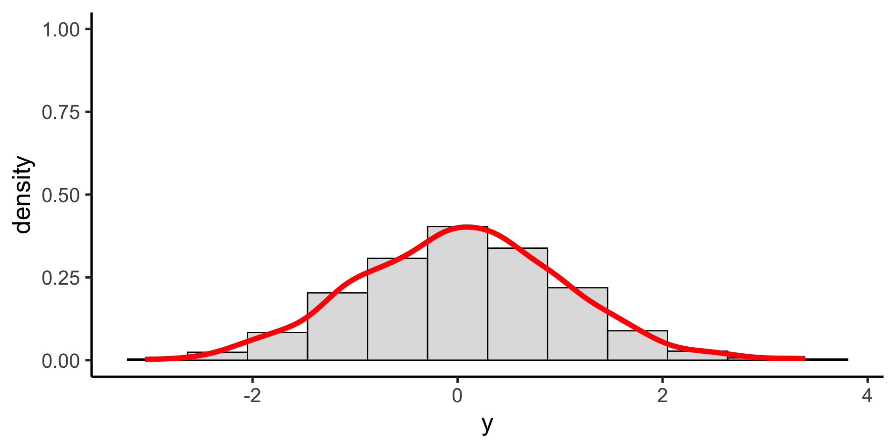
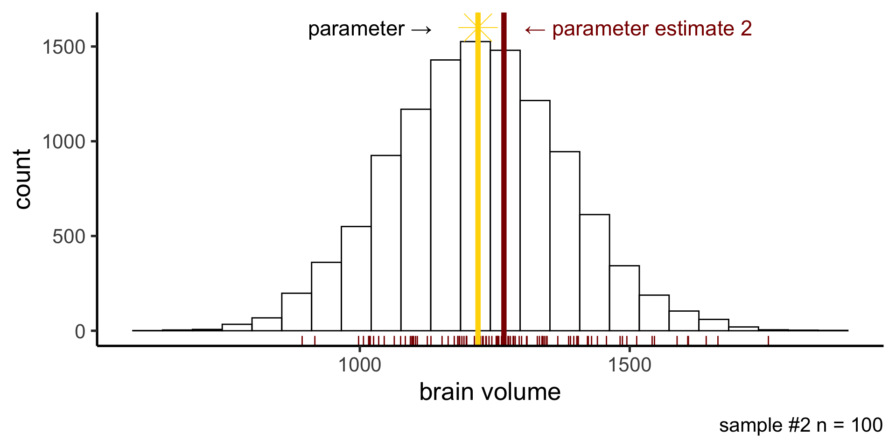
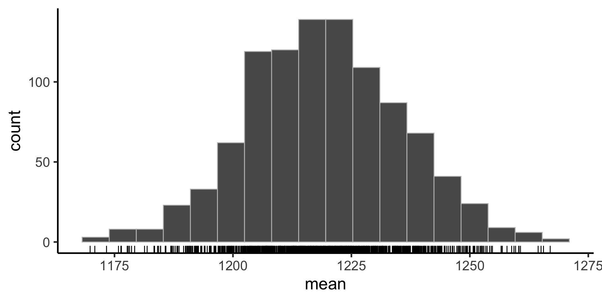
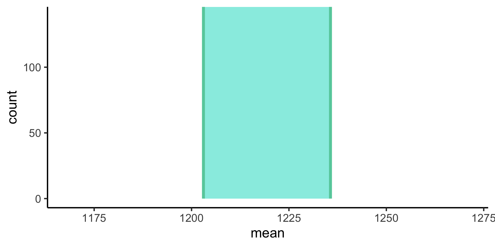
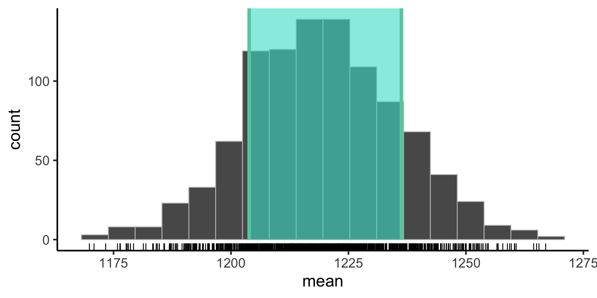

Mean and sd are a good summary of the data when the distribution is normal (gaussian)
But suppose our distribution is not normal.
Visualize the distribution
Suppose we have a non-normal distribution
Nonparametric statistics
mean() and sd() are not a good summary of central tendency and variability anymore.
Median
Instead we can use the median as our measure of central tendency: the value below which 50% of the data points fall.
IQR
And the interquartile range (IQR) as a measure of the spread in our data: the difference between the 25th and 75th percentiles (50% of the data fall between these values)

Coverage interval
We can calculate any arbitrary coverage interval. In the sciences we often use the 95% coverage interval — the difference between the 2.5 percentile and the 97.5 percentile — including all but 5% of the data.
Probability distributions
A mathematical function that describes the probability of observing different possible values of a variable (also called probability density function)
Uniform probability distribution
All possible values are equally likely

\(p(x) = \frac{1}{max-min}\)
The probability density function for the uniform distribution is given by this equation (with two parameters: min and max).
Gaussian (normal) probability distribution
One of the most useful probability distributions for our purposes is the Gaussian (or Normal) distribution
The probability density function for the Gaussian distribution is given by the following equation, with the parameters \(\mu\) (mean) and \(\sigma\) (standard deviation).

Gaussian (normal) probability distribution
When computing the mean and standard deviation of a set of data, we are implicitly fitting a Gaussian distribution to the data.
Sampling variability
The population
When measuring some quantity, we are usually interested in knowning something about the population: the mean brain volume of Penn undergrads (the parameter)
The sample
But we only have a small sample of the population: maybe we can measure the brain volume of 100 students
Sampling variability
Any statistic we compute from a random sample we’ve collected (parameter estimate) will be subject to sampling variability and will differ from that statistics computed on the entire population (parameter)
Sampling variability
If we took another sample of 100 students, our parameter estimate would be different.

Sampling distribution
The sampling distribution is the probability distribution of values our parameter estimate can take on. Constructed by taking a random sample, computing stat of interest, and repeating many times.
Sampling distribution
Our first sample was on the low end of possible mean brain volume.
Sampling distribution
Our second sample was on the high end of possible mean brain volume.
Quantifying sampling variability
The spread of the sampling distribution indicates how the parameter estimate will vary from different random samples.

Quantifying sampling variability
We can quantify the spread (express our uncertainty on our parameter estimate) in two ways.
Parametrically, by compute the standard error
Nonparametrically, by constructing a confidence interval
Quantifying sampling variability
One way is to compute the standard deviation of the sampling distribution, which has a special name: the standard error
The standard error is given by the following equation, where \(\sigma\) is the standard deviation of the population and \(n\) is the sample size.
\(\frac{\sigma}{n}\)
In practice, the standard deviation of the population is unknown, so we use the standard deviation of the sample as an estimate.
Standard error is parametric
Standard error is a parametric statistic because we assume a gaussian probaiblity distribution and compute standard error based on what happens theoretically when we sample from that theoretical distribution.
\(\frac{\sigma}{n}\)

Quantifying sampling variability
Another way is to construct a confidence interval

Practical considerations
We don’t have access to the entire population
We can (usually) only do our experiment once
So, in practice we only have one sample
Bootstrapping
To construct the sampling distribution
Bootstrapping
Instead of assuming a parametric probability distributon, we use the data themselves to approximate the underlying distribution: we sample our sample!
Bootsrapping with infer
The objective of this package is to perform statistical inference using an expressive statistical grammar that coheres with the tidyverse design framework
install.packages("infer")`
Let’s create some data
Suppose we collect a sample of 100 subjects and find their mean brain volume is 1200 cubic cm and sd is 100:
# get a sample to work with as our "data"sample1 <-tibble(subject_id =1:100,volume =rnorm(100, mean =1200, sd =100))sample1 %>%head(10)